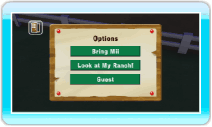
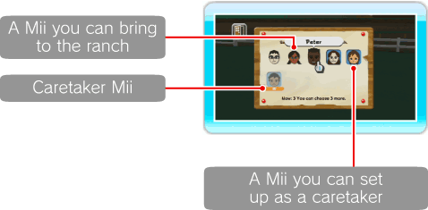
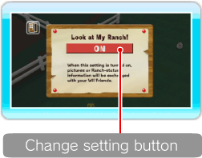

17 |
Options |
 |

Here you can select: BRING Mii, LOOK AT MY RANCH! and GUEST. ● Bring Mii Here you can bring Miis created in the Mii Channel to the Ranch. Point at the Mii you want on the Ranch and press Note: A Mii that has a 

● Look at My Ranch! If this setting is turned ON, pictures or Ranch status info will automatically be sent to your Wii Friends via WiiConnect24 ("Setting Up WiiConnect24"). Point at the change-setting button and press Note: You must have a picture in the Album to use this feature.
Invitations are sent to your Wii Friends when you exit the game. In order to invite your Wii Friends you must first exit the game by selecting Wii MENU from the Main Menu or Wii MENU from the HOME Menu. ● Guest When this setting is turned on, an unexpected Guest might show up at the Ranch via WiiConnect24 ("Setting Up WiiConnect24"). Note: Please note that this feature may be terminated at any time. |

 below the Mii's face is a Caretaker on the Ranch. You cannot deselect it.
below the Mii's face is a Caretaker on the Ranch. You cannot deselect it. |
 |
 |